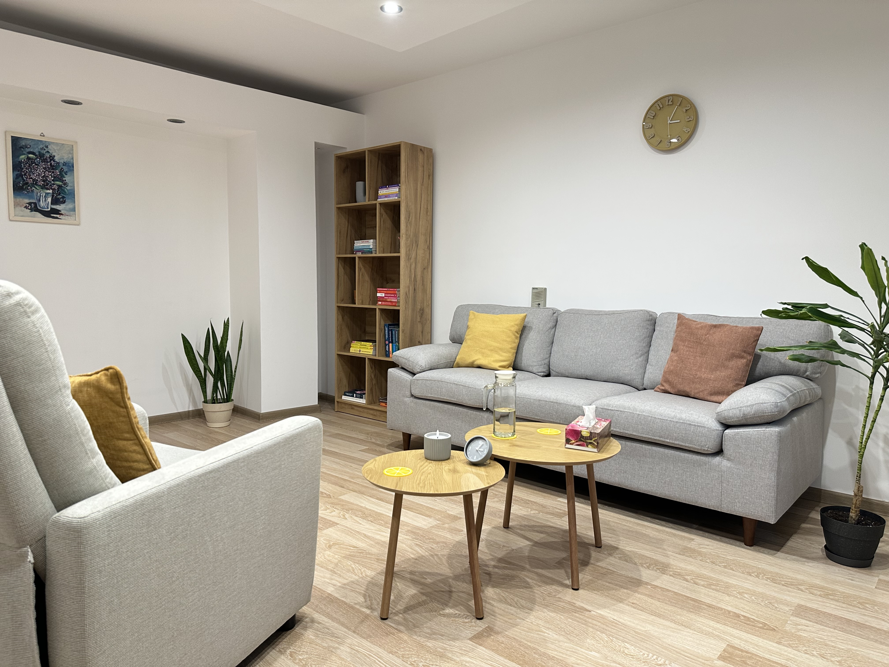
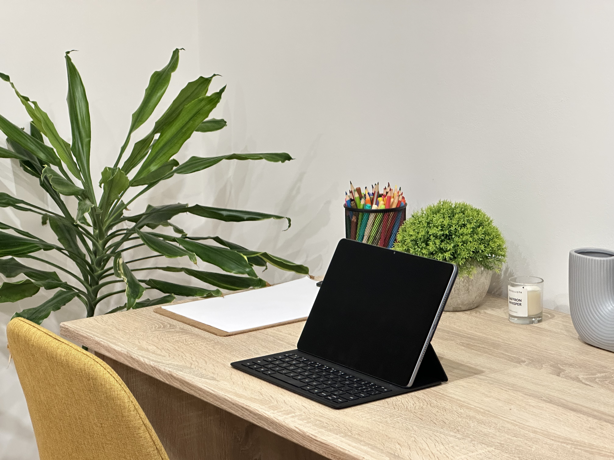

Fie că traversezi o perioadă dificilă sau îți dorești să te cunoști mai bine, găsești aici detaliile necesare despre modul în care putem lucra împreună.

Provocările și ritmul alert al vieții, evenimentele marcante sau relațiile conflictuale pot contribui la destabilizarea echilibrului interior.
Psihoterapia oferă contextul necesar pentru a înțelege tiparele care te blochează, a-ți accesa resursele și a simți împlinirea unei vieți autentice și autonome.
În cabinet vei găsi spațiul dedicat prezenței și detașării de zgomotul cotidian. Într-un cadru sigur, relația terapeutică devine baza pentru explorarea propriei lumi interioare.
Programează o ședințăȘedințele online îți permit să accesezi sprijin profesionist din confortul propriului spațiu sau de oriunde ai intimitate, eliminând barierele geografice sau timpul petrecut în trafic.
Acest format păstrează confidențialitatea, structura și eficiența procesului terapeutic, oferindu-ți în același timp flexibilitatea necesară pentru a integra psihoterapia în programul tău.
Programează o ședință
Anxietatea se simte adesea ca o stare de alertă continuă, în care mintea încearcă să anticipeze constant ce poate merge rău într-o situație, cu scopul de a dobândi un sentiment de control și siguranță.
Cum incertitudinea este greu de tolerat pentru creier, mintea caută să planifice, generând diverse scenarii și reluând informații, mecanism ce te poate menține blocat în spirale de gânduri care alimentează starea de neliniște. Astfel, te poți confrunta deseori cu o frică pe care nu ți-o explici, cu un sentiment de copleșire sau cu diverse senzații fizice, precum presiune în piept, tremur și palpitații.
În terapie, lucrăm pentru a identifica răspunsurile automate și gândurile supărătoare, învățând nu doar să le înțelegi, ci și să gestionezi eficient emoțiile și senzațiile corporale care le însoțesc. Scopul este să treci de la reacția automată la o stare de prezență, redându-ți claritatea și liniștea necesare pentru a trăi viața din plin.
Depresia apare adesea ca un mecanism de retragere și conservare a resurselor, atunci când presiunea interioară sau exterioară a devenit prea mare.
În această stare, te poți confrunta cu oboseală cronică, dificultăți de concentrare, apatie, tristețe profundă, tulburări de somn sau un sentiment de „gol” interior. Deseori, apar gânduri legate de eșec, defecte sau pierdere, iar viitorul pare lipsit de perspective sau sens.
Deși retragerea pare singura cale de a supraviețui, ea menține izolarea și sentimentul de neputință.
În terapie, lucrăm pentru a reactiva treptat resursele tale și pentru a reconstrui sensul, ajutându-te să regăsești conexiunea autentică cu tine și cu ceilalți.
Burnout-ul apare atunci când organismul rămâne blocat într-un consum de energie nesustenabil. Stresul cronic este semnalul că limitele tale biologice și emoționale au fost depășite.
Când nevoia de a performa, teama de a dezamăgi, frica de eșec sau dorința de a te simți valoros/valoroasă devin motorul principal, nevoi de bază, precum cele de odihnă, relaxare și activități recreative, trec pe ultimul loc, iar corpul rămâne constant într-o stare de activare.
Rezultatul este o epuizare profundă: iritabilitate, detașare și cinism, oboseală și dificultăți de concentrare. Fizic, această presiune se poate manifesta prin tensiune musculară, migrene sau probleme cu somnul.
În terapie, lucrăm cu acel sentiment că „trebuie” să atingi și să menții constant niște standarde înalte de a fi și de a funcționa în viața ta de zi cu zi. Ne concentrăm pe a învăța să setezi limite clare și pe restabilirea echilibrului vital dintre muncă și repaus.
Criticile, neglijarea sau experiențele de abuz pot distorsiona profund imaginea de sine. Din nevoia fundamentală de a fi acceptat/ă, ajungi să îți modelezi identitatea după așteptările celorlalți, transformând-o într-o mască socială care te protejează, dar te deconectează de la cine ești cu adevărat. Apare astfel un conflict intern epuizant, ce se traduce printr-un sentiment constant de inadecvare și o vigilență continuă față de judecata exterioară.
În terapie, căutăm să înțelegem tiparele dominate de autocritică, vinovăție și rușine. Aceste stări se manifestă, adesea, în prezent prin perfecționism, poziționare defensivă, o voce interioară critică sau nesiguranță față de propriile decizii.
Lucrăm pentru a identifica valorile tale reale și pentru a înlocui judecata cu o atitudine de acceptare, ajutându-te să îți recapeți încrederea și sentimentul că ești liber/ă să fii cine ești.
Modul în care ne raportăm la ceilalți este oglinda felului în care am învățat, în trecut, să oferim și să primim afecțiune. Dificultățile relaționale apar atunci când mecanisme de protecție, precum nevoia de a-i mulțumi constant pe ceilalți sau fuga de intimitate, devin reacții automate. Deși aceste strategii sunt încercări ale minții de a evita respingerea sau abandonul, ele reprezintă, de fapt, piedici în construirea unor relații autentice.
În terapie, analizăm acele dinamici în care te simți neînțeles, sufocat sau cuprins de teamă în preajma celorlalți, lucrând pentru a identifica tiparele de atașament și pentru a transforma reacțiile automate în alegeri conștiente.
Dezvoltarea abilității de gestionare a propriilor emoții și reacții, comunicarea asertivă și limitele sănătoase reprezintă puncte cheie în construirea unor relații bazate pe siguranță și respect reciproc.
Tranzițiile de viață, profesionale sau personale, ne determină să pășim în necunoscut și să gestionăm imprevizibilul. Adaptarea este un proces ce consumă multe resurse interioare și vine în mai multe etape, pe care fiecare dintre noi le traversează în ritmul propriu.
Sunt situații, însă, în care putem experimenta sentimente copleșitoare sau blocaje, devenind mai dificil să ne regăsim și să identificăm ce este bine pentru noi mai departe.
În terapie, căutăm să navigăm prin momentele delicate, de rezistență în fața unor noi începuturi sau de suferință în fața pierderii, cu răbdare și compasiune, găsind, totodată, puncte de sprijin în tot acest parcurs.
Transparență de la prima interacțiune.
În cabinet sau online
O ședință durează 50 de minute. Frecvența standard recomandată este de o dată pe săptămână.
Anulări: Te rog să anunți anularea sau reprogramarea cu cel puțin 24 de ore înainte. Ședințele anulate mai târziu se achită integral.
Prima ședință este una de cunoaștere, dedicată explorării nevoilor tale și stabilirii obiectivelor pe care le vom urmări împreună.
Programează o ședință